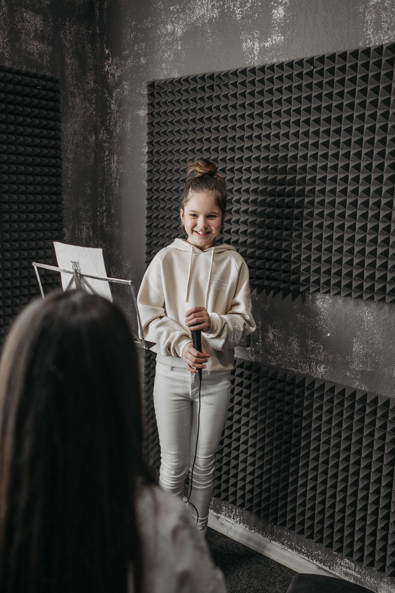
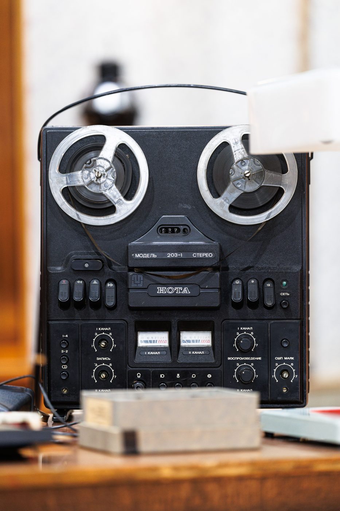

Никогда не записывался в студии? Разбираем, как проходит первый сеанс в Нячанге, сколько он стоит и почему дубли — это нормально.

Большинство людей, которые пишут нам первый раз, начинают с одной и той же фразы: «я никогда не записывался, наверное, это не для меня». Почти всегда это не так. Ниже — что на самом деле происходит на первом сеансе и почему бояться нечего.
У нас камерная студия на севере Нячанга, а не зал с толпой продюсеров за стеклом. В комнате ты и звукорежиссёр. Никто не слушает со стороны, никто не оценивает и не выкладывает твои дубли никуда.
Первое, что выбивает новичка: собственный голос в наушниках. Он звучит не так, как ты слышишь себя изнутри, и первые минуты это мешает. Лечится настройкой: делаем комфортную громкость минуса, подбираем баланс голоса в ушах — и уши привыкают за пару дублей.
Никто не пишет трек с первого раза. Пишем кусками: куплет, припев, потом дабы и бэки. На каждый кусок обычно уходит несколько дублей, из которых потом собирается лучший вариант. Три-пять дублей на строчку — это не «у тебя не получается», это обычная запись.

Специально для первого раза есть пробный тариф — 1 000 000 ₫: час записи плюс сведение. За этот час пишется трек с небольшим количеством дорожек, и ты уходишь не с «сырыми файлами на подумать», а с готовым треком, который можно слушать и показывать.
Если хочется просто записи без сведения — час записи стоит 500 000 ₫.
Бит файлом (WAV или MP3 320 kbps, не ссылка на видео) и текст — в телефоне или на бумаге. Всё остальное есть в студии: микрофон, наушники, поп-фильтр. Наушники свои приносить не надо.
Выученный текст. Час стоит одинаково независимо от того, читаешь ты по памяти или разбираешь свой же почерк с листа. Один-два прогона дома под бит — и сеанс идёт вдвое быстрее.
Тогда мы остановимся и разберём почему: обычно дело в темпе, в тональности бита или в том, что текст ещё не лёг. Это решаемо. Звукорежиссёр сидит с тобой весь сеанс именно для этого, а не для того, чтобы нажимать кнопку «запись».
Можно. Напиши в Telegram, договоримся о времени — покажем студию, оборудование и как всё устроено. Работаем ежедневно с 10:00 до 22:00, встретим у входа, парковка для байка есть.